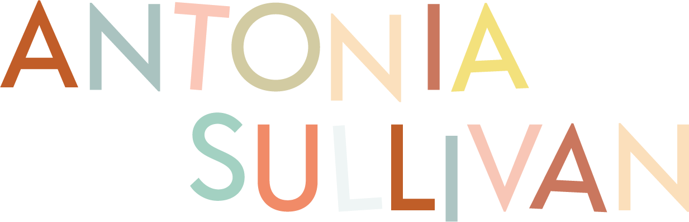

Summary
As an accomplished, award-winning professional with expertise in textile, digital and product design, I am excited to bring my skills and experience to a new opportunity. With a proven track record of success at Sprig Knitwear also as a Freelance Creative Practitioner, I am confident in my ability to make a valuable contribution to the team. My skills and experience in design, alongside my experience working within a range of education settings, would make me an excellent candidate for this position. I am organised, detail-oriented, and have a passion for helping people.
Education
- OAKLANDS COLLEGE
2023 TQUK Level 2 Certificate in Digital Marketing
- 2022 Code First Girls
Introduction ot Python and Apps
- PETER SYMONDS ADULT EDUCATION CENTRE
2013 -2014Level 3 NVQ in Working with Children and Young Adults
- BASINGSTOKE COLLEGE OF TECHNOLOGY
2004 -2006 National Diploma in General Art & Design
- WINCHESTER SCHOOL OF ART (UNIVERSITY OF SOUTHAMPTON)
2006 - 2009Upper Second Class BA (Hons) Graphics Arts
Experience
- DIRECTOR, SPRIG TEXTILES 2015 - PRESENT
As the Owner and Designer-Maker of Sprig Textiles, an Artisan Textile Studio based in Hampshire, I am responsible for all aspects of the business. Every design is inspired by childhood adventures and has a story told through geometric patterns and textures. I have had the pleasure of collaborating with a range of companies including Hampshire Cultural Trust, Iona Wool, The Simple Things Magazine, ÓR, Harth Chocolate, and Kettles Yard. My duties involve all original design and production of knitted items, as well as branding, digital marketing, and customer service. I handle all customer online orders, fulfilment, and email communications, and I am proud to say that I have a high level of satisfied customers.
- FREELANCE DIGITAL CONTENT AND MARKETING CREATOR
June 23 - PRESENT
Since June I have been working with a small group of clients, from Lumify Creative, Moon Roast Coffee, Pique School of Performing Arts and Owen Feeney Guitars working on creating content, making visual templates and planning campaigns and budgets.
- FOUNDER AND CREATIVE PRACTITIONER,PLAY ATELIER 2017 - 2022
In this role, I worked with The Riverside Nursery School, Eastleigh City Council, The Nutshell, Turner Sims, Winchester School of Art x The National Saturday Club, creating workshops and interactive installations that create environments for children to lead their own creative direction, work freely in collaboration, and allow children to explore their ideas in a more interdisciplinary approach.
- TECHNICAL SUPPORT IN KNITTED TEXTILES, WINCHESTER SCHOOL OF ART 2016 - 2018
My role at Winchester School of Art focused on working with the Undergraduate knit and textiles students. This included health and safety induction on machinery, overseeing and maintaining a functioning and tidy workspace, providing domestic knitting machine, hand knitting, photography digital and drawing workshops. Alongside this role I also assisted with the Yarn Shop, winding yarn for students.
Skills
- Textile Design
- Material Design
- Brand Development
- Digital Marketing
- Social Media Management
- Business Analytics
- Quality Ensurance
- Adobe Photoshop
- Adobe Illustrator
- Adobe InDesign
- Web Design
- Python
Awards
- 2020 MADE - Best in Show
- 2016 MolliesMakes Magazine Shortlisted Handmade Awards
- 2010 Shortlisted Heart Home Magazine Awards
- 2009 University of Southampton Best Illustration Show
Hobbies
To see my hobbies hop over here
Contact
To Contact me simply email hello@sprigtextiles.co.uk